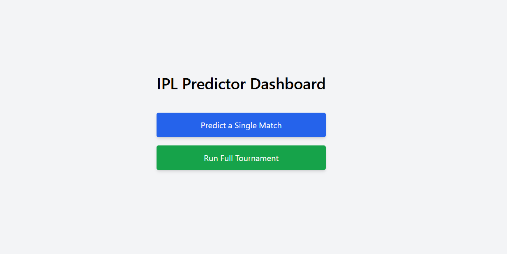
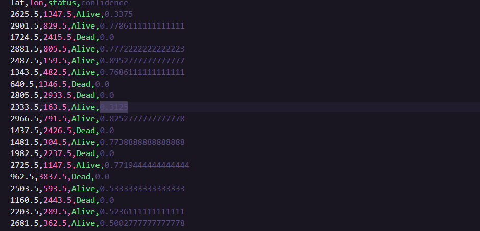
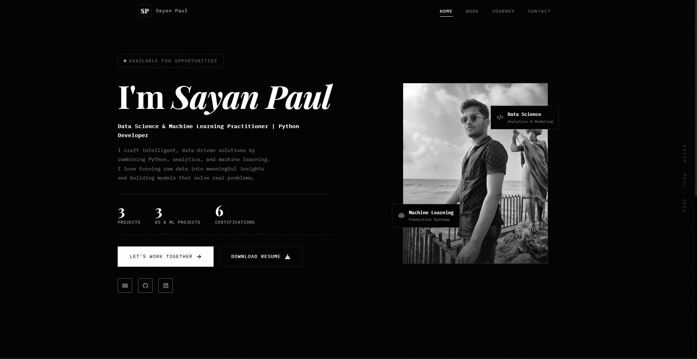
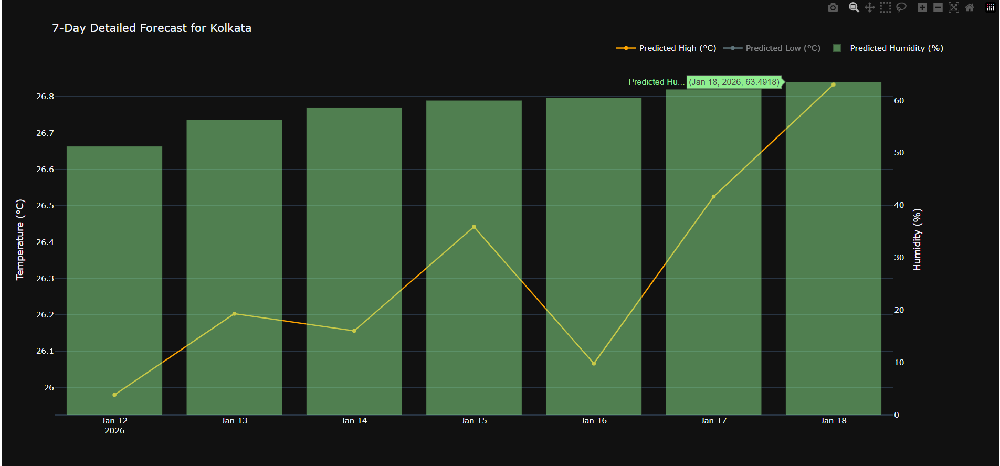
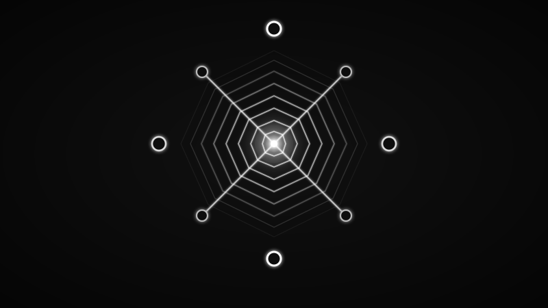

IPL Match Outcome Predictor
PythonFlaskScikit-learn
Select a skill node to filter projects — click a project to preview





Comprehensive solutions for your digital requirements
Designing and training ML models for prediction, classification, and automation. Experienced in scikit-learn, pandas, and building end-to-end ML workflows.
Turning raw datasets into clear, actionable insights using Python, pandas, and modern visualization tools. Ideal for dashboards, reports, and data understanding.
Available for custom Web-dev & DS/ML projects. Delivering clean, production-ready solutions tailored to business goals.